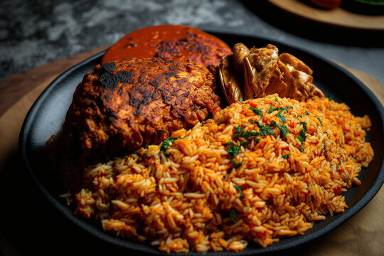

Jollof Rice

Description
Jollof (/dʒəˈlɒf/), or jollof rice, is a rice dish from West Africa. The dish is typically made with long-grain rice,
tomatoes, chilies, onions, spices, and sometimes other vegetables and/or meat in a single pot, although its ingredients
and preparation methods vary across different regions
Ingredients
- 3 tablespoons vegetable oil
- ½ large onion, diced
- 1 (14 ounce) can tomato sauce
- 1 (14 ounce) can coconut milk
- 1 teaspoon herbes de Provence
- 1 teaspoon salt, or to taste
- ½ teaspoon ground black pepper, or to taste
- 3 cups parboiled rice (such as Uncle Ben's®)
- 1 (10 ounce) package frozen mixed vegetables (carrots, corn, peas)
Steps
- Place chicken drumsticks in a large Dutch oven over medium heat. Add 1/2 onion, ginger, crushed bouillon cubes, garlic,
curry powder, 1 teaspoon herbes de Provence, black pepper, and cayenne pepper. Mix well. Cook until chicken starts
sticking to the bottom, about 5 minutes. Pour in water, mix, cover the pot, and bring to a gentle simmer; cook for 15
minutes. Remove from heat.
- Transfer chicken to a baking dish using a slotted spoon. Strain cooking liquid through a fine-mesh sieve. Reserve 1 1/2
cups liquid. Discard solids.
- Preheat oven to 400 degrees F (200 degrees C).
- Bake chicken in the preheated oven until no longer pink in the middle and the juices run clear, about 30 minutes. An
instant-read thermometer inserted into the thickest part should read 165 degrees F (74 degrees C).
- Heat 3 tablespoons vegetable oil in a large pot over medium-low heat and cook 1/2 onion until soft and translucent but
not browned, about 5 minutes. Add tomato sauce; cook and stir until slightly thickened and infused into the oil, 5 to 7
minutes.